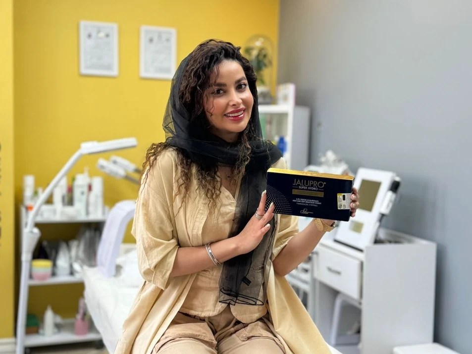
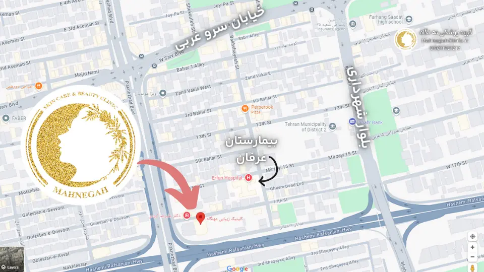
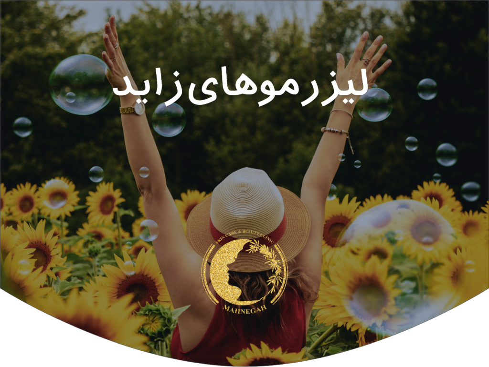
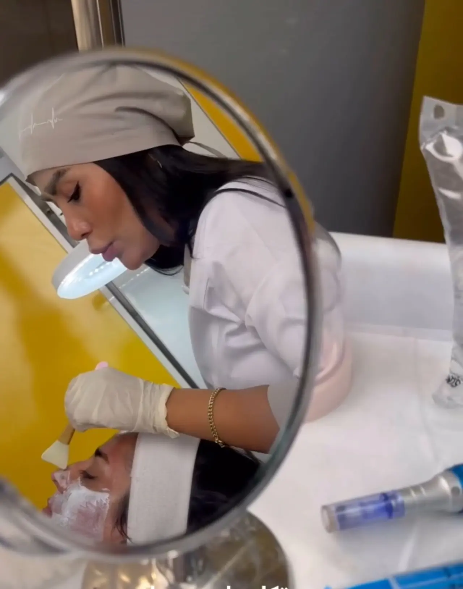
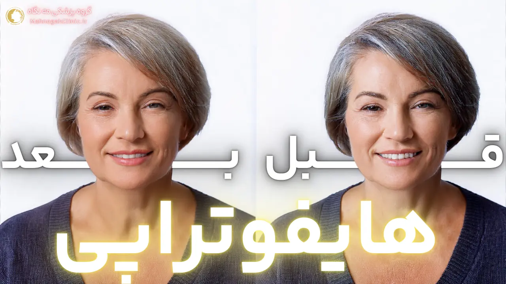
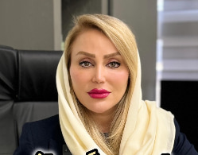
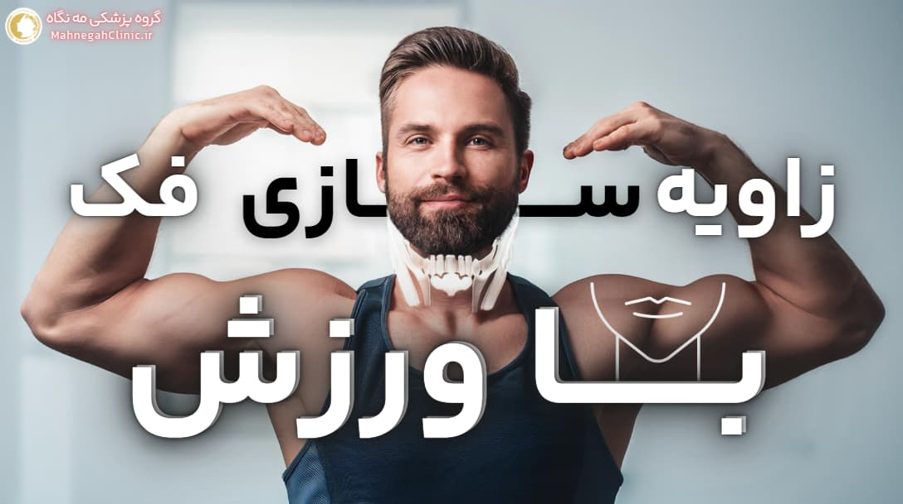
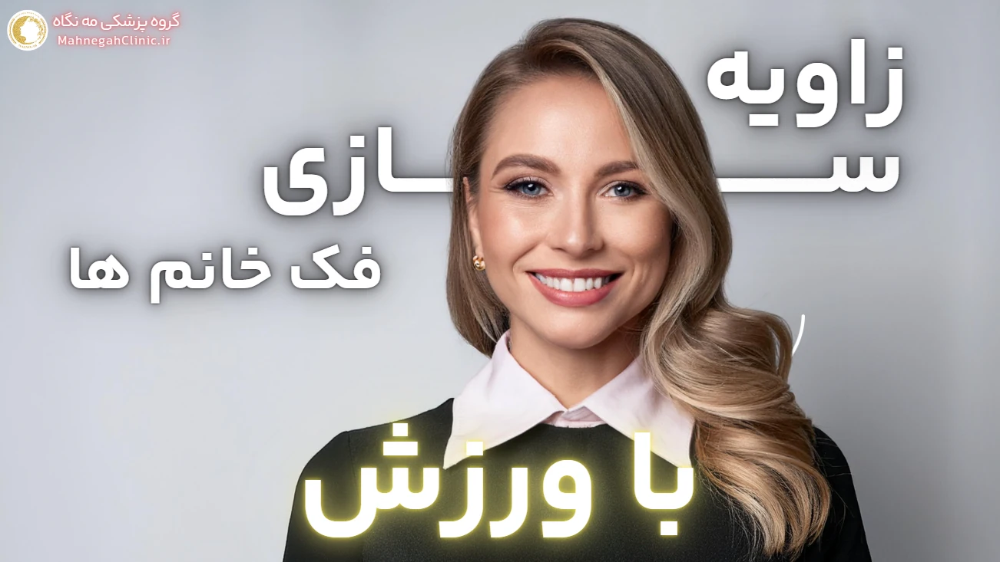

هایفوتراپی صورت و بدن
لیفت و جوانسازی غیرتهاجمی صورت، غبغب، شکم و بازو.
کلینیک پوست و زیبایی · سعادتآباد
با مه نگاه بدرخشید. پزشکان متخصص، تجهیزات مدرن و فضایی آرام برای هایفوتراپی، لیزر، فیشیال، فیلر و زاویه سازی فک.


لیفت و جوانسازی غیرتهاجمی صورت، غبغب، شکم و بازو.

لیزر بدن و صورت با دستگاههای دارای استاندارد FDA و CE.

پاکسازی، اکسیژنرسانی و آرامش پوست با پروتکل تخصصی.

فیلر، نخ، جراحی یا ورزش؛ راهنمای کامل انتخاب روش.

تزریق با محصولات دارای تأییدیه وزارت بهداشت و FDA.

رینوپلاستی، لابیاپلاستی و پیکرتراشی با مشاوره تخصصی.
مشاوره و درمان زیر نظر پزشک، از جمله دکتر فریده محمدی.
دستگاههای دارای تأییدیه FDA و CE.
سعادتآباد، ساختمان پزشکان عرفان، واحد ۱۰۸.

تو چی فکر میکنی؟ زاویه سازی فک با آدامس یا سقز میتونه تاثیر روی زاویه دار کردن فکت داشته باشه یا باید رفت سرغ جراحی و ژل؟

ورزش برای زاویه سازی فک مردان میتواند از بهترین راه های ممکن و بدون هزینه باشد اما در مقابل زاویه سازی با ژل و فیلر چطور؟

زاویه سازی فک با ورزش آیا واقعا امکان دارد یا بهتر است از روش دیگر مثل فیلر و جراحی استفاده کنیم؟ نمونه ورزش های آن کدامند.

بدیهی است که ورزش برای زاویه سازی فک زنان از کارهای نتیجه بخشی است که صورت را زاویه دار میکند اما چگونه؟ در این مطلب میبیند.

جراحی زاویه فک: روشی برای بهبود زیبایی و تناسب چهره. انواع جراحی، مزایا، معایب، آمادگی، روند جراحی و مراقبتهای پس از آن.

هایفوتراپی شکم در سعادت آباد میتواند با صرف هزینه اندک و قیمت مناسب جایگزینی آسان و خوب برای جراحی های پر زحمت لاغری باشد.